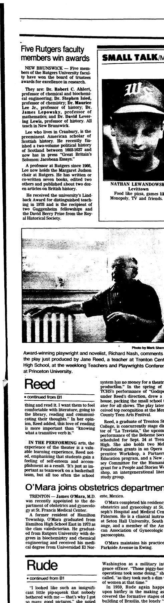

James Lepowsky
Partner of Lael Leslie, grandmother of Genevieve Elisa Symanski Nelson (wife of Peter).
Living. As for every living relative on this site, the birth date is given by year only, and no current address is shown.
James Lepowsky.
James Lepowsky, professor of math at Rutgers, is interested in “lie theory, representation theory, mathematics related to string theory.”
Family
- Partner
- Lael Leslie
- Children
- Mei Lepowsky adoptive
Life events
| Event | Date | Place and details |
|---|---|---|
| Work | 19 Aug 1989 | New Jersey, United States Professor of mathematics at Rutgers University in New Brunswick, New Jersey; awarded the Rutgers University Board of Trustees Award for Excellence in Research.1 |
Records

Sources
- Five Rutgers faculty members win awards, The Times (Trenton, New Jersey), 19 August 1989, p. 19 (B5); and 27 July 1989, p. 6.
NEW BRUNSWICK — Five members of the Rutgers University faculty have won the board of trustees awards for excellence in research. They are: Dr. Robert C. Ahlert, professor of chemical and biochemical engineering; Dr. Stephen Isied, professor of chemistry; Dr. Maurice Lee Jr., professor of history; Dr. James Lepowsky, professor of mathematics; and Dr. David Levering Lewis, professor of history. All teach in New Brunswick.
Professor of mathematics at Rutgers University in New Brunswick, New Jersey; awarded the Rutgers University Board of Trustees Award for Excellence in Research.